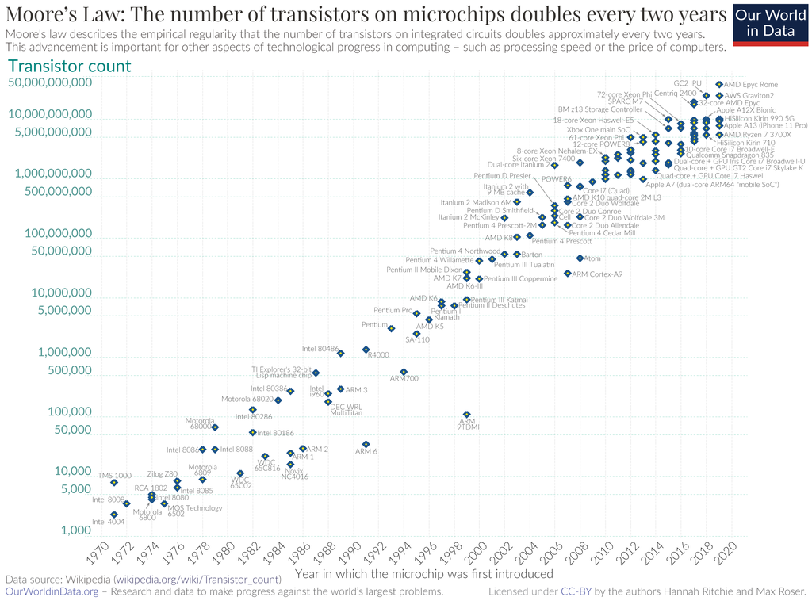

Moore Law¶
La 'Llei Moore <https://es.wikipedia.org/wiki/ley_de_moore>`__ va ser formulada el 1965 per Gordon Moore, co -founder d'Intel i expressa que cada 2 anys es duplica el nombre de transistors d'un microprocessor.
Gràcies a aquesta tendència a augmentar el nombre de transistors, la potència i la capacitat de càlcul han augmentat exponencialment des del 1965 fins a l’actualitat. Es preveu que encara augmenti uns quants anys més, fins que la tecnologia tingui efectes quàntics, cosa que no permetrà fabricar transistors més petits.
Aquesta llei també és vàlida per a altres dispositius basats en transistors com RAM o memòria flash.
{kind=link}

Max Roser, Hannah Ritchie <https://commons.wikimedia.org/wiki/file:moore%27S_Law_transistor_Count_1970-2020.png> __, `cc per SA 4.0 <https://creativecommons.org/licenses/by-sa/4.0/deed.en> `__, a través de Wikimedia Commons.¶
Ràtio de capacitat/preu¶
Els dispositius de maquinari informàtics pateixen una forta deflació dels preus amb el pas del temps, cosa que fa que un dispositiu molt car, de la gamma, sigui uns quants anys per ser un dispositiu obsolet, en el rang de preus més barat.
Una bona directriu a l’hora de comprar maquinari no és comprar el mercat més barat, ja que normalment té un percentatge de preus de baixa capacitat.
D'altra banda, els dispositius més nous del mercat solen llançar -se amb preus molt elevats perquè són productes de la major capacitat o rendiment i això els fa més atractius. El resultat és que aquests dispositius de gran nivell solen tenir una capacitat de relació/preu o rendiment/preu.
A les taules que es mostren a continuació, es poden reflectir aquests conceptes.
Memòria USB de la marca Sandisk a Amazon el 2022.
| Capacitat [Gbyte] | Preu [€] | Capacitat/preu [Gbyte/€] |
|---|---|---|
| 16 | 6 | 2.67 |
| 32 | 8 | 4.00 |
| 64 | 10 | 6.40 |
| 128 | 17,70 | 7.23 |
| 256 | 30,90 | 8.28 |
| 512 | 87,80 | 5.83 |
Com es pot veure, es poden millorar els dispositius de preus més baixos duplicant la seva capacitat per poc més diners.
La relació de preus de Gigabyte millora constantment fins que arribem al rang més nou i més alt, que té un preu molt superior a la resta durant el període de llançament, per la qual cosa no val la pena comprar per la seva proporció de capacitat/preu més baixa.
Taula de preus del processador Intel a Amazon el 2022. La capacitat de càlcul s’ha obtingut del programari de passatge.
| Model | Rendiment [PCMark] | Preu [€] | Rendiment/preu |
|---|---|---|---|
| I5-3470 3.2GHz | 4666 | 65,82 | 71 |
| I5-11400F 2.6GHz | 17191 | 150,45 | 114 |
| I5-12400 2.5GHz | 19500 | 200,00 | 98 |
| i5-12600kf | 27052 | 270.00 | 100 |
| I9-12900ks 2.4GHz | 44482 | 795.00 | 56 |
Els models de processadors de menor rendiment no estan a la venda com a processadors independents, però continuen venent en equips ja muntats, tot i estar obsolets i tenir un baix rendiment/preu.
Podem tornar a veure que l’equip més barat té una proporció de rendiment/preu deficient, així com la més cara i alta. La millor compra es troba en un equip intermedi, amb la millor relació de rendiment/preu.